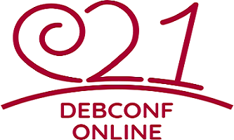

Publié le Mercredi 25 Août 2021
Écrit par Laura Arjona Reina, Jean-Pierre Giraud
Traduit par Théo Bolmont

La DebConf21 se déroule en ligne, du 24 août au 28 août 2021. Il s'agit de la 22e conférence Debian, et les organisateurs et les participants travaillent dur ensemble pour créer des événements intéressants et fructueux. DebConf21 accueille ses sponsors !
Nous souhaitons accueillir chaleureusement les 19 sponsors de DebConf21, et vous les présenter.
Nous avons cinq sponsors Platinum.
Notre premier sponsor Platinum est Lenovo. En tant que leader technologique mondial fabriquant un large portefeuille de produits connectés, notamment des smartphones, des tablettes, des PC et des stations de travail, ainsi que des dispositifs RA/RV, des solutions de maison/bureau intelligents et de centres de données, Lenovo comprend à quel point les systèmes et plateformes ouverts sont essentiels dans un monde connecté.
Notre prochain sponsor Platinum est Infomaniak. Infomaniak est la plus grande société d'hébergement web de Suisse, offrant également des services de sauvegarde et de stockage, des solutions pour les organisateurs d'événements, des services de live-streaming et de vidéo à la demande. Elle est propriétaire à 100 % de ses centres de données et de tous les éléments essentiels au fonctionnement des services et produits fournis par la société. au fonctionnement des services et produits fournis par la société à la fois logiciels et matériels).
Roche est notre troisième sponsor Platinum. Roche est un important fournisseur international de produits pharmaceutiques et une société de recherche qui se consacre à la personnalisation des soins de santé. Plus de 100 000 employés dans le monde entier travaillent à la résolution de certains des plus grands défis de l'humanité en utilisant la science et la technologie. Roche est fortement impliquée dans des projets de recherche projets de recherche collaborative financés par l'état avec d'autres partenaires industriels et universitaires et soutient DebConf depuis 2017.
Amazon Web Services (AWS) est notre quatrième sponsor Platinum. Amazon Web Services est l'une des plateformes de cloud computing la plus complète et la plus largement adoptée au monde, Elle offre plus de 175 services complets à partir de centres de données répartis dans le monde entier (dans 77 zones de disponibilité au sein de 24 régions géographiques). (dans 77 zones de disponibilité au sein de 24 régions géographiques). Parmi les clients d'AWS, on trouve les start-ups à la croissance la plus rapide, les plus grandes entreprises et les principales agences gouvernementales. et des agences gouvernementales de premier plan.
Google est notre cinquième sponsor Platinum. Google est l'une des plus grandes entreprises technologiques au monde. mondiale, qui fournit une large gamme de services et de produits liés à l'Internet, tels que des technologies de comme les technologies de publicité en ligne, la recherche, l'informatique dématérialisée, les logiciels et le matériel. Google soutient Debian en parrainant la DebConf depuis plus de dix ans. dix ans, et est également un partenaire de Debian qui sponsorise des parties de l'infrastructure d'intégration continue de Salsa within Google Cloud Platform.
Notre sponsor Gold est Matanel Foundation. La Fondation Matanel opère en Israël, car son premier souci est de préserver la cohésion d'une société et d'une nation en proie à des divisions. La Fondation Matanel travaille également en Europe, en Afrique et en Amérique du Sud.
Nos sponsors Silver sont: Arm: le meilleur portefeuille de conception de SoC au monde, les solutions motorisées d'Arm soutiennent l'innovation depuis plus de 30 ans et sont déployées dans plus de 160 milliards de puces à ce jour, Hudson-Trading, une entreprise qui recherche et développe des algorithmes de trading automatisé en utilisant des techniques mathématiques avancées, Ubuntu le système d'exploitation fourni par Canonical, Globo, le plus grand conglomérat de médias au Brésil, fondé à Rio de Janeiro en 1925 et distribue des contenus de haute qualité sur de multiples plateformes, Two Sigma, d'enquête rigoureuse, d'analyse de données et d'invention pour contribuer à résoudre les défis dans les services financiers et GitLab, une plate-forme de développement logiciel open source de bout en bout avec contrôle de version intégré, le suivi des problèmes, la revue de code, le CI/CD, et plus encore.
Sponsors Bronze: Univention, Gandi.net, daskeyboard, InterFace AG et credativ.
Et finalement, nos Sponsor de niveau, ISG.EE.
Merci à tous nos sponsors pour leur soutien ! Leurs contributions permettent à un grand nombre de de contributeurs Debian du monde entier de travailler ensemble, de s'aider et d'apprendre les uns des autres lors de la DebConf21.
Participer à la DebConf21 en ligne
La 22e conférence Debian se tiendra en ligne, en raison de COVID-19, du 24 au 28 août 2021. Les exposés, discussions, panels et autres activités se déroulent de 12 h à 2 h UTC. Visitez le site web de la DebConf21 à l'adresse suivante https://debconf21.debconf.org pour connaître le programme complet, regarder le streaming en direct et rejoindre les différents canaux de communication pour participer à la conférence.